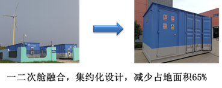
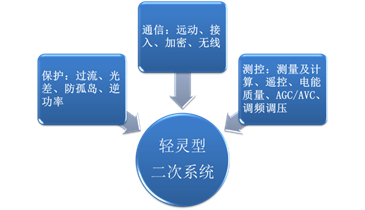

分散式风电一体化控制器与紧凑型开关站解决方案
分散式风电特点
分散式风电是指，位于负荷中心附近，不以大规模远距离输送电力为目的，所产生的电力就近接入当地电网进行消纳的风电项目。接入电压等级应为110千伏及以下，并在110千伏及以下电压等级内消纳，不向110千伏的上一级电压等级电网反送电。其作用：
1.在化石能源和水资源较为贫瘠的地区，可利用分散式风电补偿负荷突然增长免去扩容输配电设备所产生的费用； 2.在负荷集中的周边地区修建分散式风电场，可减小用电压力，推迟电网的扩建，增加政策制定的弹性并缓解资金压力； 3.布置在需要提高电能质量的网络末端，同时达到提高电能质量的目的； 4.参与调峰调频等辅助服务，拓展风电的利用场景。






图片全屏后，双击或双指缩放均可对图片进行放大、缩小操作，左右滑动可查看同组(data-preview-group相同的图片为一组)其它图片，点击会关闭预览
第三张图片，纯粹为了占位：